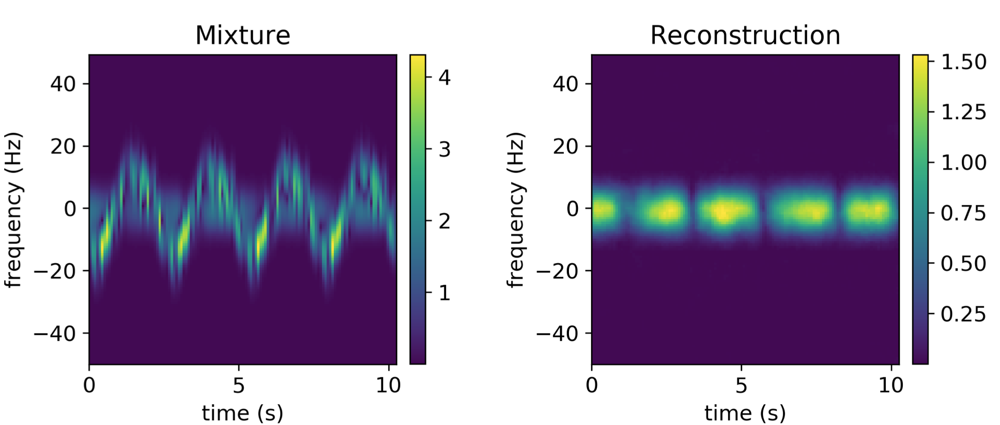

I am a PhD researcher at the Department of Electronic and Electrical Engineering at the University of Strathclyde. My research interests involve Computer Vision, Signal Processing, and Machine Learning.
A recurring theme in my works is the context of learning in data-limited settings. The topics I tend to deal with include:
- 🍱 Multi-Modal Learning
- 🎨 Generative Models
- 🖼 Image Synthesis and Manipulation
- 🔬 Image Super-Resolution
- 🌆➡🌃Image-to-Image Translation
- 🔎 Model Robustness Assessment
- 🛰 Computer Vision for Remote Sensing Applications
- 🔊 Computer Vision for Radar Signal Processing
My research involves applying computer vision techniques to real-world applications where (i) the datasets are small or (ii) high risk of poor generalization exists. So far, this has primarily been done with short-range radar data and with satellite imagery.
Research Outputs
On Input Formats for Radar Micro-Doppler Signature Processing by Convolutional Neural Networks
Radar 2022: International Conference on Radar Systems
Mikolaj Czerkawski, Carmine Clemente, Craig Michie, Christos Tachtatzis
(Publication: October 2022)
Robustness of deep neural networks for micro-Doppler radar classification
International Radar Sympiosium 2022
Mikolaj Czerkawski, Carmine Clemente, Craig Michie, Ivan Andonovic, Christos Tachtatzis
Deep internal learning for inpainting of cloud-affected regions in satellite imagery
MDPI Remote Sensing
Mikolaj Czerkawski, Priti Upadhyay, Christopher Davison, Astrid Werkmeister, Javier Cardona, Robert Atkinson, Craig Michie, Ivan Andonovic, Malcolm Macdonald, Christos Tachtatzis

Neural Knitworks: Patched Neural Implicit Representation Networks
arXiv:2109.14406
Mikolaj Czerkawski, Javier Cardona, Robert Atkinson, Craig Michie, Ivan Andonovic, Carmine Clemente, Christos Tachtatzis
>
Behavioural classification of cattle using neck-mounted accelerometer-equipped collars
MDPI Sensors
Dejan Pavlovic, Mikolaj Czerkawski, Christopher Davison, Oskar Marko, Craig Michie, Robert Atkinson, Vladimir Crnojevic, Ivan Andonovic, Vladimir Rajovic, Goran Kvascev, Christos Tachtatzis
A Flexible Multi-Temporal and Multi-Modal Framework for Sentinel-1 and Sentinel-2 Analysis Ready Data
MDPI Remote Sensing
Priti Upadhyay, Mikolaj Czerkawski, Christopher Davison, Javier Cardona, Malcolm Macdonald, Ivan Andonovic, Craig Michie, Robert Atkinson, Nikela Papadopoulou, Konstantinos Nikas, Christos Tachtatzis

Neural weight step video compression
NeurIPS Workshop on Pre-Registration Science 2021
Mikolaj Czerkawski, Javier Cardona, Robert Atkinson, Craig Michie, Ivan Andonovic, Carmine Clemente, Christos Tachtatzis
A novel micro-doppler coherence loss for deep learning radar applications
European Radar Conference (EuRAD 2021)
Mikolaj Czerkawski, Christos Ilioudis, Carmine Clemente, Craig Michie, Ivan Andonovic, Christos Tachtatzis
CYBELE: A Hybrid Architecture of HPC and Big Data for AI Applications in Agriculture
ISBN 9781032009841, CRC Press 2022
Naweiluo Zhou, Li Zhong, Dennis Hoppe, Branislav Pejak, Oskar Marko, Javier Cardona, Mikolaj Czerkawski, Ivan Andonovic, Craig Michie, Christos Tachtatzis, Emmanouil Alexakis, Philip Mavrepis, Dimosthenis Kyriazis, Marcin Pospieszny
Non-invasive diver respiration rate monitoring in hyperbaric lifeboat environments using short-range radar
IEEE OCEANS 2021
Mikolaj Czerkawski, Fraser Stewart, Christos Ilioudis, Craig Michie, Ivan Andonovic, Robert Atkinson, Maurice Coull, Donald Sandilands, Gareth Kerr, Carmine Clemente, Christos Tachtatzis

Interference motion removal for Doppler radar vital sign detection using variational encoder-decoder neural network
IEEE Radar Conference 2021 (RadarConf21)
Mikolaj Czerkawski, Christos Ilioudis, Carmine Clemente, Craig Michie, Ivan Andonovic, Christos Tachtatzis

On models and approaches for human vital signs extraction from short range radar signals
European Conference on Antennas and Propagation (EuCAP 2020)
Mikolaj Czerkawski, Christos Ilioudis, Carmine Clemente, Craig Michie, Ivan Andonovic, Christos Tachtatzis
Datasets and Other
Data for: "Deep internal learning for inpainting of cloud-affected regions in satellite imagery"
Mikolaj Czerkawski, Carmine Clemente, Craig Michie, Ivan Andonovic, Christos Tachtatzis